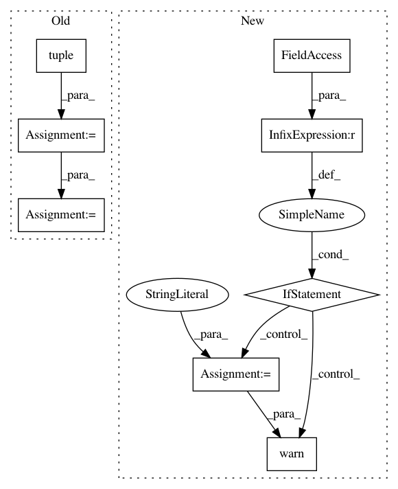

0131d72f0f7a5c13f00961aea054094b2b78f071,scipy/interpolate/fitpack.py,,splev,#Any#Any#Any#Any#,298
Before Change
t, c, k = tck
// fitpack interpolates along the last axis
sh = tuple(range(c.ndim))
c = c.transpose(sh[1:] + (0,)) // roll the first axis
res = _impl.splev(x, (t, c, k), der, ext)
return res
else:
After Change
if isinstance(tck, BSpline):
if tck.c.ndim > 1:
mesg = ("Calling splev() with BSpline objects with c.ndim > 1 is "
"not recommended. Use BSpline.__call__(x) instead.")
warnings.warn(mesg, DeprecationWarning)
// remap the out-of-bounds behavior
try:
extrapolate = {0: True, }[ext]
except KeyError:
raise ValueError("Extrapolation mode %s is not supported "
In pattern: SUPERPATTERN
Frequency: 3
Non-data size: 8
Instances
Project Name: scipy/scipy
Commit Name: 0131d72f0f7a5c13f00961aea054094b2b78f071
Time: 2016-10-12
Author: evgeny.burovskiy@gmail.com
File Name: scipy/interpolate/fitpack.py
Class Name:
Method Name: splev
Project Name: metric-learn/metric-learn
Commit Name: 130cbadff294b686e466d430f26b2d069f6bbf59
Time: 2019-06-07
Author: 31916524+wdevazelhes@users.noreply.github.com
File Name: metric_learn/sdml.py
Class Name: _BaseSDML
Method Name: _fit
Project Name: scipy/scipy
Commit Name: 0131d72f0f7a5c13f00961aea054094b2b78f071
Time: 2016-10-12
Author: evgeny.burovskiy@gmail.com
File Name: scipy/interpolate/fitpack.py
Class Name:
Method Name: splint